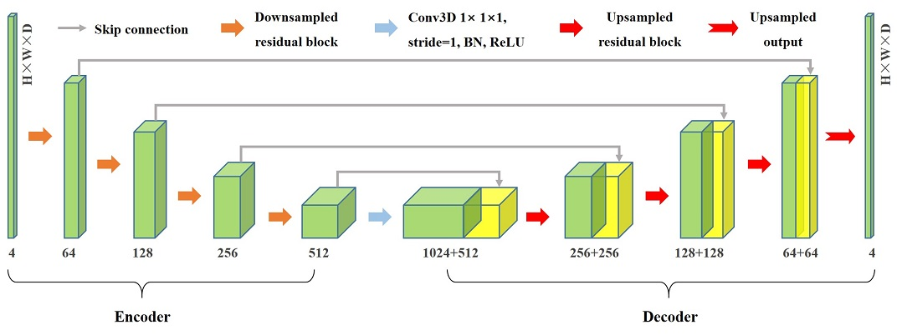
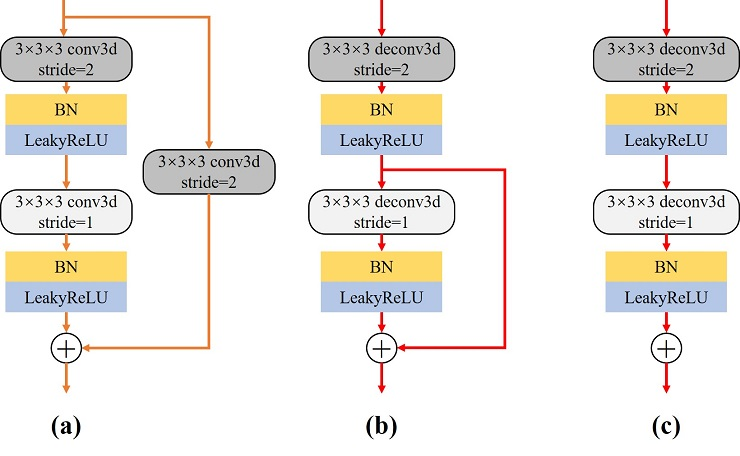
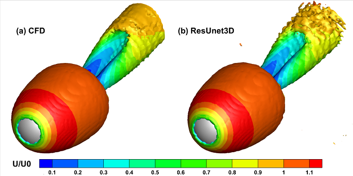

Reduced order model for three-dimensional unsteady flow


Overview
Three-dimensional complex flows are prevalent in practical engineering problems, and effectively capturing and analyzing the flow field poses significant challenges. The CFD simulation of 3D flow fields involving complex geometries demands substantial computing resources due to the increased mesh degrees of freedom. Consequently, this limitation hinders the progress of downstream tasks like interactive design and real-time optimal control.
While there has been extensive exploration of deep learning technology for flow field modeling in recent years, most of the focus has remained on two-dimensional shapes. As a result, there is still a noticeable gap when applying these models to real-world engineering scenarios. The stronger spatial coupling effect in 3D data compared to 2D data is a primary reason for this disparity. Additionally, training neural networks with a large number of model parameters requires robust computing power and ample storage resources.
For 3D unsteady flow, the reduced-order model based on the fully convolutional neural network called “ResUnet3D” can quickly establish the nonlinear mapping between snapshots of the 3D flow field, offering a promising approach to tackle these challenges.
Problem Description
Acquiring high-precision three-dimensional flow field data poses challenges for the industry. However, this model takes a different approach by not relying on a large number of historical flow field snapshots for support.Instead, it directly extracts the potential characteristics of the flow field from the current snapshot \(F^t\) at a single moment. Subsequently, two strategies for feature decoding are proposed:
Low-dimensional multi-scale features can be decoded into incremental flow fields \(\Delta {F}^t\) amplified by a certain factor \(scale\), enabling long-term predictions of the three-dimensional non-stationary field through an iterative strategy:
The other is to directly decode it into the flow field of the future moment, but the data often needs to be normalized. Similarly, long-term predictions need to be achieved through iteration:
Technology Path
The main technical approach for the above-mentioned problem mainly includes the following steps:
Dataset loading;
Model construction;
Optimizer and loss function;
Model training;
Model inference;
Result visualization.
Model structure
The proposed neural network model follows the paradigm of an encoder-decoder architecture, which exhibits a symmetrical U-shaped structure. The main difference lies in the replacement of traditional convolutions with convolutional residual blocks.

Encoder: The left side of the network, known as the contracting path, is responsible for hierarchically extracting the latent features of the high-dimensional flow field. The encoder consists of four downsampled residual blocks, as illustrated in Fig(a). Downsampling is accomplished by utilizing convolutional operations with a stride of 2 instead of pooling operations. Following each residual block operation, the number of feature channels is doubled while the size of the feature map is halved.
Decoder: On the right side of the network, referred to as the expansive path, the low-dimensional features are upsampled. Correspondingly, the decoding part also includes four upsampling residual blocks, with the structure of the upsampling residual block shown in Fig(b). The first step involves the application of deconvolution to increase the size of the original features by a factor of two while reducing the number of feature channels. It should be noted that the upsampling output block (c) responsible for the final output of the model discards the identity connection part in the upsampling residual block.
Residual Connect: In addition to the residual connections within the residual blocks, we also introduced skip connections in our model, indicated by solid gray arrows in . The increased number of residual connections helps in capturing low-frequency features of the high-dimensional flow field, further enriching the details of the flow field prediction.

Dataset
The dataset is a multidimensional array of flow snapshots of three-dimensional flows around sphere：
The viscous flow around a three-dimensional sphere is a fundamental problem in fluid mechanics, particularly in engineering applications. For this research, a Reynolds number of Re=300 is chosen. At this value, the sphere’s wake will periodically shed hairpin-shaped vortices, resulting in pronounced unsteady characteristics.
The flow configuration and calculation details for flow around a sphere are given in the paper. The final flow data set obtained Cartesian uniform interpolation method in this paper by is denoted as \(F\in {{\mathbb{R}}^{T\times C\times H\times W\times D}}\) in 6D×6D×6D 3d space, where \(T=400\) represents the number of snapshots, \(C=4\) represents the number of channels, representing pressure, streamwise velocity, normal velocity, and spanwise velocity information respectively. Additionally, \(H=128\), \(W=64\), and \(D=64\) correspond to the height, width, and depth of the snapshots, respectively.
[1]:
import os
import time
import argparse
import numpy as np
import mindspore
from mindspore import nn, context, ops, jit, set_seed
from mindspore import Tensor
from mindspore.amp import DynamicLossScaler, auto_mixed_precision, all_finite
from mindflow.utils import load_yaml_config
from mindflow.common import get_warmup_cosine_annealing_lr
from src import ResUnet3D, create_dataset, UnsteadyFlow3D, check_file_path, calculate_metric
[2]:
set_seed(123456)
np.random.seed(123456)
Training environment
The static GRAPH of MindSpore framework is adopted for training.
Training can be done on GPU (default) or Ascend (single card).
[3]:
def parse_args():
"""Parse input args"""
parser = argparse.ArgumentParser(description='model train for 3d unsteady flow')
parser.add_argument("--mode", type=str, default="GRAPH", choices=["GRAPH", "PYNATIVE"],
help="Context mode, support 'GRAPH', 'PYNATIVE'")
parser.add_argument("--save_graphs", type=bool, default=False, choices=[True, False],
help="Whether to save intermediate compilation graphs")
parser.add_argument("--save_graphs_path", type=str, default="./graphs")
parser.add_argument("--device_target", type=str, default="GPU", choices=["GPU", "Ascend"],
help="The target device to run, support 'Ascend', 'GPU'")
parser.add_argument("--device_id", type=int, default=0, help="ID of the target device")
parser.add_argument("--config_file_path", type=str, default="./config.yaml")
parser.add_argument("--norm", type=bool, default=False, choices=[True, False],
help="Whether to perform data normalization on original data")
parser.add_argument("--residual_mode", type=bool, default=True, choices=[True, False],
help="Whether to use indirect prediction mode")
parser.add_argument("--scale", type=float, default=1000.0,
help="Whether to use indirect prediction mode")
input_args = parser.parse_args()
return input_args
args = parse_args()
context.set_context(mode=context.GRAPH_MODE if args.mode.upper().startswith("GRAPH") else context.PYNATIVE_MODE,
save_graphs=args.save_graphs,
save_graphs_path=args.save_graphs_path,
device_target=args.device_target,
device_id=args.device_id)
use_ascend = context.get_context(attr_key='device_target') == "Ascend"
Hyperparameter configuration
Read several types of parameters from the configuration file, which are related to data, model, optimizer, and summary.
[4]:
config = load_yaml_config(args.config_file_path)
data_params = config["data"]
model_params = config["model"]
optimizer_params = config["optimizer"]
summary_params = config["summary"]
Dataset loading
The downloaded data is the original flow data (original_data_0.npy), where the index can be used to distinguish different flow states.
The first run of the program will generate training (train_data_0.npy), validation (eval_data_0.npy) and inference (infer_data_0) datasets according to the configuration requirements of regularization, division ratio, etc.
The size of the training dataset is (T, C, D, H, W) -> (300, 4, 64, 128, 64), and then it will be converted to MindSpore’s dedicated DatasetGenerator.
[5]:
# data for training
train_loader = create_dataset(data_params, is_train=True, norm=args.norm, residual=args.residual_mode, scale=args.scale)
train_dataset = train_loader.batch(model_params['batch_size'], drop_remainder=True)
# data for evaluating
eval_loader = create_dataset(data_params, is_eval=True, norm=args.norm, residual=args.residual_mode, scale=args.scale)
eval_dataset = eval_loader.batch(1, drop_remainder=False)
Model construction
Build a suitable ResUnet3D model by configuring the number of input channels (in.dims), the number of output channels (out.dims), the number of hidden channels in the first layer (base), and the initialization method.
[6]:
model = ResUnet3D(in_channels=model_params['in_dims'], base=model_params['base'], out_channels=model_params['out_dims'])
Loss functions and optimizers
To suppress error accumulation during inference, we add a gradient loss term with weak physical interpretability to the original strength loss function, where only the first derivative is computed.
[7]:
if use_ascend:
loss_scaler = DynamicLossScaler(1024, 2, 100)
auto_mixed_precision(model, 'O1')
else:
loss_scaler = None
# prepare optimizer and loss function
steps_per_epoch = train_dataset.get_dataset_size()
lr = get_warmup_cosine_annealing_lr(lr_init=optimizer_params['initial_lr'],
last_epoch=optimizer_params['train_epochs'],
steps_per_epoch=steps_per_epoch,
warmup_epochs=optimizer_params['warmup_epochs'])
optimizer = nn.Adam(params=model.trainable_params(), learning_rate=Tensor(lr))
problem = UnsteadyFlow3D(network=model, loss_fn=model_params['loss_fn'], metric_fn=model_params['metric_fn'],
loss_weight=model_params['loss_weight'], dynamic_flag=model_params['dynamic_flag'],
t_in=data_params['t_in'], t_out=data_params['t_out'],
residual=args.residual_mode, scale=args.scale)
Train function and data sink
With MindSpore>= 2.0.0, you can train neural networks using functional programming paradigms, and single-step training functions are decorated with jit. The data_sink function is used to transfer the step-by-step training function and training dataset.
[8]:
def forward_fn(train_inputs, train_label):
loss = problem.get_loss(train_inputs, train_label)
if use_ascend:
loss = loss_scaler.scale(loss)
return loss
grad_fn = ops.value_and_grad(forward_fn, None, optimizer.parameters, has_aux=False)
@jit
def train_step(train_inputs, train_label):
loss, grads = grad_fn(train_inputs, train_label)
if use_ascend:
loss = loss_scaler.unscale(loss)
is_finite = all_finite(grads)
if is_finite:
grads = loss_scaler.unscale(grads)
loss = ops.depend(loss, optimizer(grads))
loss_scaler.adjust(is_finite)
else:
loss = ops.depend(loss, optimizer(grads))
return loss
[9]:
sink_process = mindspore.data_sink(train_step, train_dataset, sink_size=1)
summary_dir = os.path.join(summary_params['summary_dir'], f"norm-{args.norm}",
f"resi-{args.residual_mode} scale-{args.scale} {model_params['loss_fn']}")
ckpt_dir = os.path.join(summary_dir, "ckpt")
check_file_path(ckpt_dir)
Model training
[10]:
print("pid:", os.getpid())
print(f"Running in {args.mode.upper()} mode within {args.device_target} device, using device id: {args.device_id}.")
start_time = time.time()
for cur_epoch in range(1, optimizer_params['train_epochs'] + 1):
local_time_beg = time.time()
model.set_train(True)
for _ in range(steps_per_epoch):
cur_loss = sink_process()
epoch_time = time.time() - local_time_beg
print(f"epoch: {cur_epoch:-4d} loss: {cur_loss.asnumpy():.8f} epoch time: {epoch_time:.2f}s", flush=True)
if cur_epoch % summary_params['eval_interval'] == 0:
model.set_train(False)
# A uniform metric than total loss is unified as the evaluation standard
calculate_metric(problem, eval_dataset)
mindspore.save_checkpoint(model, os.path.join(ckpt_dir, f'ckpt-{cur_epoch}'))
print(f"Start-to-End total training time: {(time.time() - start_time):.2f}s")
pid: 3184621
Running in GRAPH mode within GPU device, using device id: 0.
epoch: 1 loss: 4.42149210 epoch time: 93.07s
epoch: 2 loss: 3.66354370 epoch time: 80.61s
epoch: 3 loss: 3.45540905 epoch time: 80.62s
epoch: 4 loss: 3.41599178 epoch time: 80.57s
epoch: 5 loss: 3.40474415 epoch time: 80.62s
epoch: 6 loss: 3.39673615 epoch time: 80.59s
epoch: 7 loss: 3.39119720 epoch time: 80.59s
epoch: 8 loss: 3.37303853 epoch time: 80.82s
epoch: 9 loss: 3.31753325 epoch time: 80.71s
epoch: 10 loss: 3.14250851 epoch time: 80.70s
================================Start Evaluation================================
mean metric: 1.36825517 eval total time:6.76
=================================End Evaluation=================================
epoch: 11 loss: 2.76249218 epoch time: 82.83s
epoch: 12 loss: 2.37564182 epoch time: 81.61s
epoch: 13 loss: 2.13626671 epoch time: 81.59s
epoch: 14 loss: 2.00457954 epoch time: 81.75s
epoch: 15 loss: 1.85440254 epoch time: 82.10s
epoch: 16 loss: 1.85113728 epoch time: 80.90s
epoch: 17 loss: 1.90822351 epoch time: 80.51s
epoch: 18 loss: 1.78560519 epoch time: 80.52s
epoch: 19 loss: 1.86209464 epoch time: 80.57s
epoch: 20 loss: 1.79454994 epoch time: 80.61s
================================Start Evaluation================================
mean metric: 0.44466619 eval total time:5.47
=================================End Evaluation=================================
Start-to-End total training time: 1646.58s
Model inference
After completing the model training, run eval.py to control the read model path through both the console and configuration files. This will enable you to efficiently and accurately infer the long-term 3D flow field in the future, based on the initial flow field at any given moment.
Result visualization
The changes in the pressure contour map of the
Z=0section during trained indirect model inference are as follows：

The periodic flow characteristics of different physical quantities are quickly and faithfully predicted by the reduced-order model.
A 3D vorticity isosurface (\(Q=0.0005\)) plot colored according to flow velocity after two cycles is shown below:

The hairpin-like shape of the vortex is basically the same, but the result predicted by ResUnet3D is obviously rough.